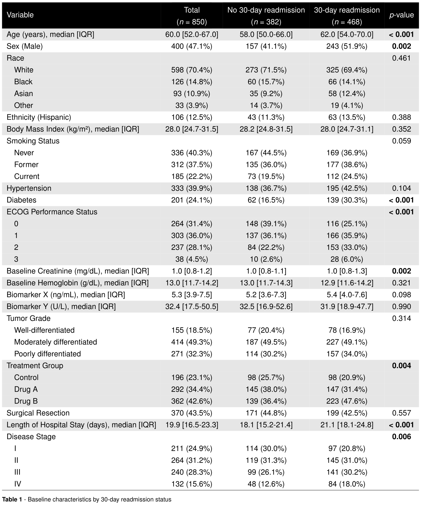
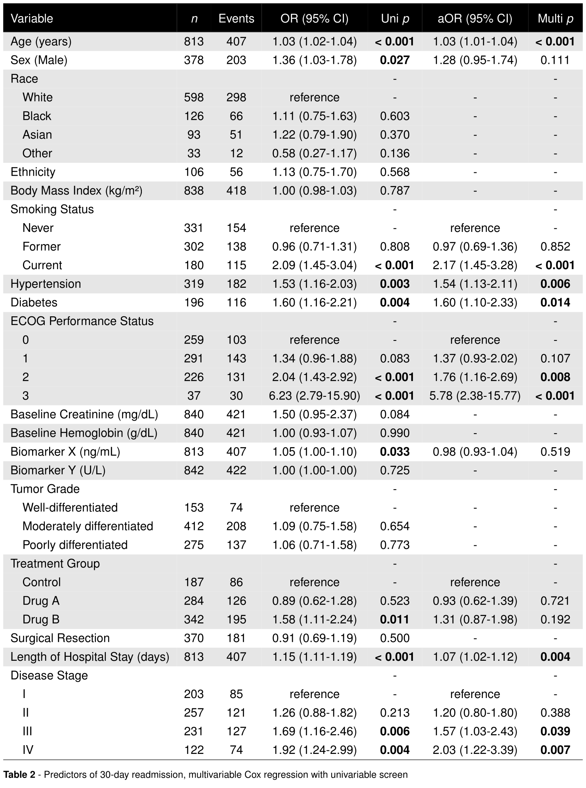
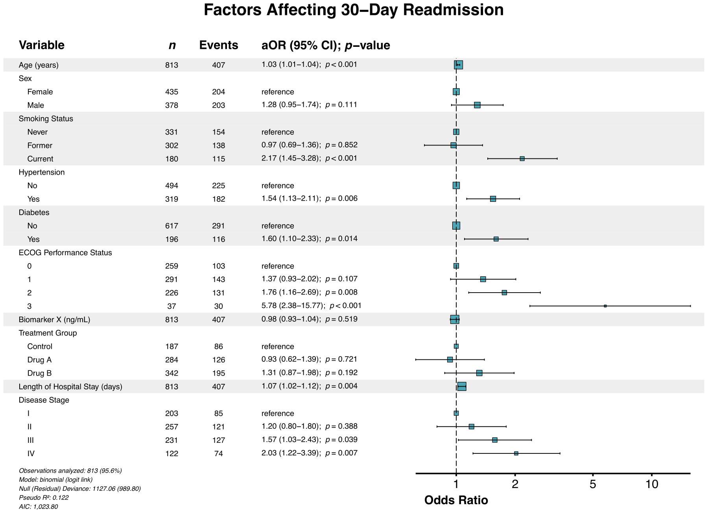

summata | /suːˈmɑːtə/ | Latin, n. pl. of summātum, gerundive of summāre: those that have been summarized
Complete, publication-ready statistical summaries.
Overview
The summata package provides a comprehensive framework for generating summary tables and visualizations from statistical analyses. Built on data.table for computational efficiency, it streamlines the workflow from descriptive statistics, through regression modeling, to final output—all using a unified interface with standardized, presentation-ready results.
For a more comprehensive description of this package and its features, see the full documentation and vignettes.

Installation
The stable release of this package can be installed from CRAN.
install.packages("summata")Alternatively, install it directly from GitHub (stable) or Codeberg (development):
# Stable release
devtools::install_github("phmcc/summata")
# Development version
devtools::install_git("https://codeberg.org/phmcc/summata.git")Package Composition
Design Principles
The architecture of summata reflects three guiding principles:
Consistent syntax. All modeling functions share a common signature: data first, followed by the outcome or variable of interest, then constituent/modifying variables. This convention facilitates both pipe-based workflows and pedagogical clarity.
Transparent computation. Functions attach their underlying model objects and raw numerical results as attributes, permitting verification of computations or extension of analyses beyond the formatted output.
Separation of concerns. Analysis, formatting, and export constitute distinct operations, allowing each stage to be modified independently.
These principles manifest in the standard calling convention:
where data is the dataset, variable is the variable of interest (dependent variable, endpoint/outcome, stratification/grouping variable, etc.), and c("var1", "var2", ..., "varN")is a vector of constituent/modifying variables (independent variables, model covariates, compared/explanatory factors, etc.). The result is a formatted table for export, with readily accessible attributes for further analysis.
Functional Reference
This package provides a variety of functions for different stages of statistical analysis:
Descriptive analysis
Tables to provide quick summary data and comparison tests between different groups.
| Function | Purpose |
|---|---|
desctable() |
Descriptive statistics with stratification and hypothesis testing |
survtable() |
Survival probability estimates at specified time points |
Predictive analysis
Fitted univariable and multivariable regression results for predictive modeling.
| Function | Purpose |
|---|---|
uniscreen() |
Systematic univariable analysis across multiple predictors |
fit() |
Single regression model with formatted coefficient extraction |
fullfit() |
Integrated univariable screening with multivariable regression |
compfit() |
Nested model comparison with composite scoring |
multifit() |
Multivariate regression analysis with a single predictor evaluated against multiple outcomes |
Table export
Export of finalized tables to various commonly used formats.
| Function | Format | Dependencies |
|---|---|---|
autotable() |
Auto-detect from file extension | Varies |
table2pdf() |
xtable, LaTeX distribution |
|
table2tex() |
LaTeX source | xtable |
table2html() |
HTML | xtable |
table2docx() |
Microsoft Word |
officer, flextable
|
table2pptx() |
Microsoft PowerPoint |
officer, flextable
|
table2rtf() |
Rich Text Format |
officer, flextable
|
Data visualization
Generation of publication-ready forest plot graphics to summarize regression models.
| Function | Application |
|---|---|
autoforest() |
Automatic model class detection |
lmforest() |
Linear models |
glmforest() |
Generalized linear models |
coxforest() |
Proportional hazards models |
uniforest() |
Univariable screening results |
multiforest() |
Multivariate regression analysis results |
Supported Model Classes
The following regression models are currently supported by summata. Specify the model using the model_type parameter in the appropriate regression function (uniscreen(), fit(), fullfit(), compfit(), or multifit()):
| Model Class | model_type |
Function | Effect Measure |
|---|---|---|---|
| Linear regression | lm |
stats::lm() |
β coefficient |
| Logistic regression |
glm, family = "binomial"
|
stats::glm() |
Odds ratio |
| Logistic (overdispersed) |
glm, family = "quasibinomial"
|
stats::glm() |
Odds ratio |
| Poisson regression |
glm, family = "poisson"
|
stats::glm() |
Rate ratio |
| Poisson (overdispersed) |
glm, family = "quasipoisson"
|
stats::glm() |
Rate ratio |
| Gaussian (via GLM) |
glm, family = "gaussian"
|
stats::glm() |
β coefficient |
| Gamma regression |
glm, family = "Gamma"
|
stats::glm() |
Ratio* |
| Inverse Gaussian |
glm, family = "inverse.gaussian"
|
stats::glm() |
Ratio* |
| Cox proportional hazards | coxph |
survival::coxph() |
Hazard ratio |
| Conditional logistic | clogit |
survival::clogit() |
Odds ratio |
| Negative binomial | negbin |
MASS::glm.nb() |
Rate ratio |
| Linear mixed effects | lmer |
lme4::lmer() |
β coefficient |
| Generalized linear mixed effects | glmer |
lme4::glmer() |
Odds/rate ratio |
| Cox mixed effects | coxme |
coxme::coxme() |
Hazard ratio |
*with log link; coefficient with identity link
Comparison with Related Packages
The R ecosystem includes several established packages for regression table generation. The following comparison identifies areas of overlap and distinction:
| Capability | summata | gtsummary | finalfit | arsenal |
|---|---|---|---|---|
| Descriptive statistics | ✓ | ✓ | ✓ | ✓ |
| Survival summaries | ✓ | ✓ | ◐ | — |
| Univariable screening | ✓ | ✓ | ✓ | ✓ |
| Multivariable regression | ✓ | ✓ | ✓ | ✓ |
| Multi-format export | ✓ | ✓ | ✓ | ✓ |
| Integrated forest plots | ✓ | ◐ | ✓ | — |
| Model comparison | ✓ | ✓ | ◐ | — |
| Mixed-effects models | ✓ | ◐ | ◐ | — |
| Multivariate regression analysis | ✓ | — | — | — |
✓ Full support | ◐ Partial support | — Not available
A detailed feature comparison is available in the package documentation.
Illustrative Example
The clintrial dataset included with this package provides simulated clinical trial data comprising patient identifiers, baseline characteristics, therapeutic interventions, short-term outcomes, and long-term survival statistics. The following example demonstrates how summata functions can be used to analyze perioperative factors affecting 30-day hospital readmission.
Step 0: Data Preparation
Prior to analysis, load the dataset, apply labels, and define predictors:
library(summata)
# Load example data
data("clintrial")
data("clintrial_labels")
# Define candidate predictors
predictors <- c("age", "sex", "race", "ethnicity", "bmi", "smoking",
"hypertension", "diabetes", "ecog", "creatinine",
"hemoglobin", "biomarker_x", "biomarker_y", "grade",
"treatment", "surgery", "los_days", "stage")Step 1: Descriptive Statistics
Use the desctable() function to generate summary statistics with stratification by a grouping variable (in this case, 30-day readmission):
table1 <- desctable(
data = clintrial,
by = "readmission_30d",
variables = predictors,
labels = clintrial_labels
)
table2pdf(table1, "table1.pdf",
caption = "\\textbf{Table 1} - Baseline characteristics by 30-day readmission status",
paper = "auto",
condense_table = TRUE,
dark_header = TRUE,
zebra_stripes = TRUE
)
Step 2: Regression Analysis
Perform an integrated univariable-to-multivariable regression workflow using the fullfit() function:
table2 <- fullfit(
data = clintrial,
outcome = "readmission_30d",
predictors = predictors,
method = "screen",
p_threshold = 0.05,
model_type = "glm",
labels = clintrial_labels
)
table2pdf(table2, "table2.pdf",
caption = "\\textbf{Table 2} - Predictors of 30-day readmission, multivariable Cox regression with univariable screen",
paper = "auto",
condense_table = TRUE,
dark_header = TRUE,
zebra_stripes = TRUE
)
Step 3: Forest Plot
Finally, generate a forest plot to provide a graphical representation of effect estimates using the glmforest() function:
forest_30d <- glmforest(table2,
title = "Factors Affecting 30-Day Readmission",
labels = clintrial_labels,
indent_groups = TRUE
)
ggsave("forest_30d.pdf", forest_30d,
width = attr(forest_30d, "rec_dims")$width,
height = attr(forest_30d, "rec_dims")$height,
units = "in")
Development
Repository
- Primary development: codeberg.org/phmcc/summata
- GitHub releases: github.com/phmcc/summata
Contributing
Bug reports and feature requests may be submitted via the issue tracker. Contributions are welcome; please consult the contributing guidelines prior to submitting pull requests.
Acknowledgments
The design of summata draws inspiration from several existing packages:
-
finalfit (Harrison) — Regression workflow concepts
-
gtsummary (Sjoberg et al.) — Table generation architecture
-
arsenal (Heinzen et al.) — Descriptive statistics methodology
- data.table (Dowle & Srinivasan) — High-performance data operations
Citation
citation("summata")
To cite summata in publications, use:
McClelland PH (2026). _summata: Publication-Ready Summary Tables and Forest Plots_. R package version 0.11.4, <https://phmcc.github.io/summata/>.
A BibTeX entry for LaTeX users is
@Manual{,
title = {summata: Publication-Ready Summary Tables and Forest Plots},
author = {Paul Hsin-ti McClelland},
year = {2026},
note = {R package version 0.11.4},
url = {https://phmcc.github.io/summata/},
}Further Resources
-
Function documentation:
?function_nameor the reference index -
Vignettes:
vignette("summata")or online articles - Issue tracker: Codeberg Issues, GitHub Issues
The summata package is under active development. Any breaking changes to the API will be reported in the changelog.